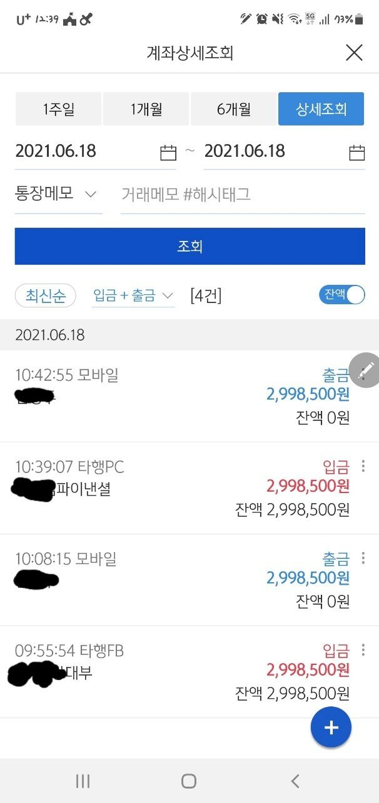

[신용회복자대출] 신용회복주부대출(김한수상담사님)대출후기

회생폐지후 신용회복중으로 주부대출 문의를 위해 김한수 상담사님께 상담을 받았습니다.
제 조건은 신용회복 18회차 변제금 30만원가량 미납2회있음 신용회복후 따로대출받은건없었구요 임대아파트거주중으로 보증금담보대출1710만원만 있는 상황이였습니다.
주부였지만 일용직으로 일해서 급여3개월내역 통장에찍혀있었구요~
이조건으로 대출실행전 상담을 먼저했는데..미납땜에진행이안되니 미납정리해야한다고해서 미납정리하고 다시연락준다고하고 첫번째 상담을 마무리
14일급여받고 미납정리후 17일쯤 연락을하여 오전에서류필요한거문의드리고 바로 서류준비해서 오후에접수
심사전화오기까지 불안한마음에 상담사님을 어찌나 귀찮게 이것저것 물어봤는지..
그때마다 상담사님 너무나 친절하게 하나하나 설명해주시고 답변해주시고~~
어찌나 고마웠던지^^
주부대출은 맥심이300이라 두군데에서 600만원 대출실행이되었네요~
원래500정보필요했었는데..여유자금으로100만원더 생겨서 너무좋네여~
김한수 상담사님~제가 불안한 마음에 이것저것 귀찮게 많이물어보고 재촉하고 그랬는데..
너무 친절히 상담해 주셔서 감사해요~~덕분에 급한거 해결잘했어여~~~^^